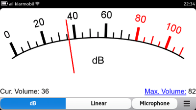
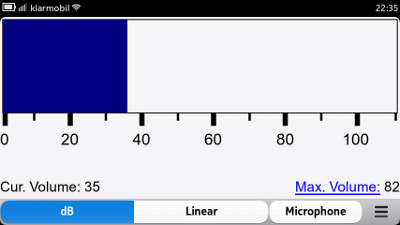
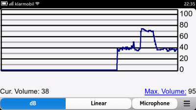

Current Version: 0.11.2 (Fremantle) / 0.2.1 (Harmattan)
Content
Description
VUMeter is a fun-tool to display the sound level. VUMeter presents the current sound level using different views.
Supported Operating Systems
VUMeter is currently available for Maemo Fremantle (N900) and MeeGo Harmattan (N9/N950). The N900 version can be installed via the application manager from the extras repository. VUMeter for Harmattan (N9/N950) currently can be installed from rzr’s or my repository.
Features
The Harmattan version currently just displays the current volume level in three different views. The Fremantle version features more functionality such as triggering of commands by volume level, colored scales for some views, or recording of volume data to a file. The plan is to also port these features to the Harmattan version.
Screenshots
The following screenshots are taken from the Harmattan / MeeGo version.


To switch between the different meters/views just tap the current view.
License
Copyright 2011 Ruediger Gad VUMeter is free software: you can redistribute it and/or modify it under the terms of the GNU General Public License as published by the Free Software Foundation, either version 2 of the License, or (at your option) any later version. VUMeter is distributed in the hope that it will be useful, but WITHOUT ANY WARRANTY; without even the implied warranty of MERCHANTABILITY or FITNESS FOR A PARTICULAR PURPOSE. See the GNU General Public License for more details. You should have received a copy of the GNU General Public License along with VUMeter. If not, see http://www.gnu.org/licenses/.
Contact
Feel free to contact me under the following e-mail address r.c.g@gmx.de.